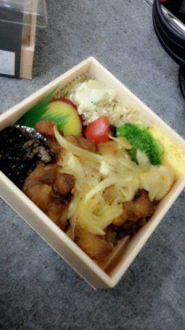

こんばんわあ〜(*´∀｀)ノ
ロッティーだお--- ☆
↑これは乃木どこの扇風機の
収録する前に楽屋で
撮りました-\(・ω・)/
おりの中で ！
おりっちゅうのは
たっくさんのイスを収納する
土台のことや(・▽・)
３人で入ってみてん♪
今日は 『人間という楽器』の
振り付けレッスンを
アンダーメンバーでやってきました/
頑張ってきましたぁ〜=・▽・=
今日のレッスンは
アンダーメンバーの団結力が
また少しUPできたのかもしれない！
どこまでもピースv(・∀・*)
振りの中に出てくるんだよ、
どこまでもピースが・・・
ハッハッハッ )))
あっ、そうだ、
最近食べたお弁当で
『うわぁ〜 これはLOVEだぁ〜(〃▽〃)
まひろ これLOVEだわぁ〜 』
って思って 撮ったのがあるから
せっかくだし 載せちゃえーーーーーい☆笑
エイッ

黒酢のきいた唐揚げさん。
その周りに味の染み込んだ
玉ねぎやブロッコリー。
ひじきにおいもさん。
大好きだ (*´ω`*)
ぴょん.
皆たま、、
コメントでも見たよぉ〜っと
書いてくださっている方が
ちらほらといらっしゃっるんですけど
6枚目の楽曲達
聴きましたかっ！？
ミュージックビデオ
見ましたかあっ！？ \( ´▽`)/
『扇風機』...
まひろ見つけれたかなっ？？
なんか ポケー ってしてるとこ
あったやろ わら...
普段の自分をそのまま
撮られたキモチ。
ビチョビチョになったシーンは
寒すぎて どーなるかと思ったよ(*^^*)/
１人でダンスもして
一瞬だけど 踊り終わって
確かまひろの足が映ってる♪
まひろの歌うパーツは
「どうすればいいのかは？」
「友達とかに説明したって
笑われるだけだろう...
自分で経験しなきゃ理解できない.」
でふ 。
聞いてみてねん♪るん
ぴょん.
話戻っちゃうけど
これが そう おりの中...。
.。o○ぷくぷくぷくぅ〜
不思議な世界中
海なのか 宇宙なのか 花畑なのか...
ではではっ
今日も １日お疲れ様でありますぅ。
またすぐに 更新します(・ω・)
ぅんぢゃらね、
おやすみなさい...
好きだぉ。